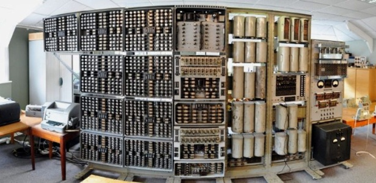
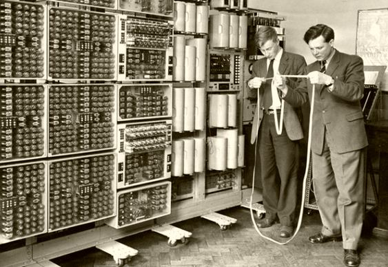
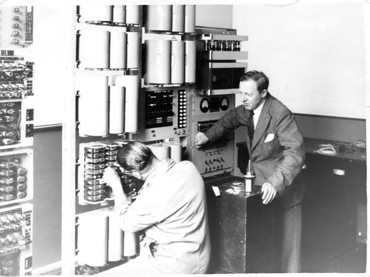
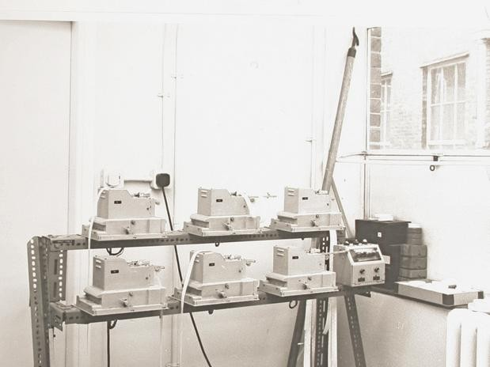

A Evolução da Informática
Fotografia do Museu Nacional do Computador, no Reino Unido, mostra o computador "Witch"
The Witch "A Bruxa"
Nos anos 50, durante seus dias de glória, "The Witch", cuja construção começou em 1949, foi a peça central do programa britânico de Pesquisa de Energia Atômica. Sua missão era facilitar o trabalho dos cientistas, realizando de forma eletrônica operações matemáticas que até então deviam ser feitas com simples máquinas de calcular.
Apesar da lentidão de seus primeiros trabalhos - demorava dez segundos para multiplicar dois números -, em pouco tempo ele se transformou em uma peça indispensável e chegou a ser utilizado 80 horas por semana, considerado um recorde para a época.
Quando em 1957 foi superado por computadores mais rápidos e pequenos, foi transferido para a atual Universidade de Wolverhampton (leste da Inglaterra), onde serviu para ensinar os primeiros alunos de informática a programar. De lá, passou para o Museu de Ciência e Indústria de Birmingham, mas no fechamento deste a máquina foi desmontada e levada para um armazém municipal em 1997.
A Recuperação
O equipamento foi encontrado há três anos por Kevin Murrell, um membro do conselho de administração do Museu Nacional do Computador, que reconheceu o painel de controle de "The Witch" em uma fotografia tirada por um antiquário de computadores. Após várias viagens ao armazém, a equipe de restauração colocou mãos na massa e em três anos de trabalho conseguiu salvar até 1.390 peças originais.
Agora, voltou a ser ligado no Reino Unido, onde será exposto como peça de museu após um reparo de três anos.
Em cerimônia no Museu Nacional do Computador em Buckinghamshire (centro da Inglaterra), vários dos criadores da histórica peça, assim como estudantes que aprenderam a programar com ela, apertaram o botão "on".
Fotografia mostra a máquina "The Witch" em funcionamento
A máquina, construída em 1951, pesa mais de duas toneladas e exigia reajustes para manter seu funcionamento
Leitores das fitas de papel eram usados no processamento dos cálculos realizados pelo computador
